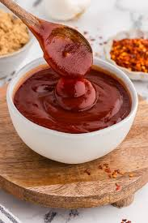

St Louis Sweet and Smoky BBQ Sauce

This St Louis Sweet and Smoky BBQ Sauce is a delicious and versatile sauce that combines the perfect balance of sweetness and smokiness. It is made with a blend of tomato sauce, brown sugar, vinegar, and a variety of spices, creating a rich and flavorful sauce that can be used for grilling, dipping, or as a marinade for your favorite meats.
Ingredients:
- 1 cup tomato sauce
- 1/4 cup apple cider vinegar
- 1/4 cup brown sugar
- 2 tablespoons Worcestershire sauce
- 1 tablespoon smoked paprika
- 1 teaspoon garlic powder
- 1 teaspoon onion powder
- Salt and pepper to taste
Steps
- In a medium saucepan, combine the tomato sauce, apple cider vinegar, brown sugar, Worcestershire sauce, smoked paprika, garlic powder, onion powder, salt, and pepper.
- Bring the mixture to a simmer over medium heat, stirring occasionally to dissolve the sugar.
- Reduce the heat to low and let the sauce simmer for about 20-30 minutes, or until it has thickened to your desired consistency.
- Remove the sauce from the heat and let it cool before using. You can store it in an airtight container in the refrigerator for up to a week.
- Use this sweet and smoky BBQ sauce to enhance the flavor of your grilled meats, as a dipping sauce for fries or chicken tenders, or as a marinade for ribs or pulled pork. Enjoy!
Home